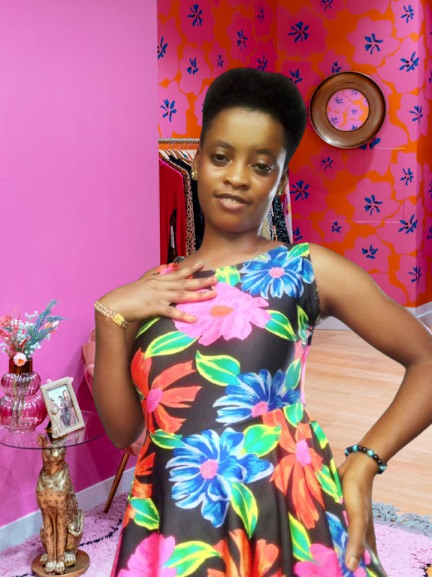

Victoria Goodnews Augustine | WDD 130
About Me
Hello! My name is Victoria Goodnews Augustine, and I am from Akwa Ibom State in Nigeria. I am currently studying Software Development at Brigham Young University–Idaho.
I enjoy learning new technologies, building websites, and discovering ways software can solve real-world problems. In my free time, I love helping people, connecting with others, and working on personal projects.
I am excited to improve my skills in this Web Fundamentals course and continue growing as a software developer.
My Tribe & Origin
Akwa Ibom State, Niger Delta, Nigeria

I proudly hail from Midim Atan, Ekpeyung Atai, in the Ekpeyung Clan of Essien Udim Local Government Area, Akwa Ibom State, located in the South-South region of the Niger Delta, Nigeria. My people belong to the great Ibibio tribe, one of the oldest, largest, and most respected ethnic groups in Akwa Ibom.
The Ibibio are known for their rich cultural heritage and traditions, showcased through colorful festivals, vibrant music, and energetic dances like Ekpo, Ekpe, and Abang. We are also celebrated for our delicious dishes such as afang soup, edikang ikong, ekpang nkukwo, and afia efere.
As a people, we value family, unity, hospitality, education, and spirituality. Our homeland is blessed with abundant mineral resources, fertile farmlands, rivers, and forests, making us one of the most naturally endowed groups in Nigeria. The Niger Delta is especially famous for being rich in oil, natural gas, limestone, and clay.
Beyond natural wealth, the Ibibio are admired for their wisdom, resilience, craftsmanship, farming, and entrepreneurship. We take pride in our traditional governance systems, our strong sense of identity, and our contributions to the growth and development of Nigeria as a whole.